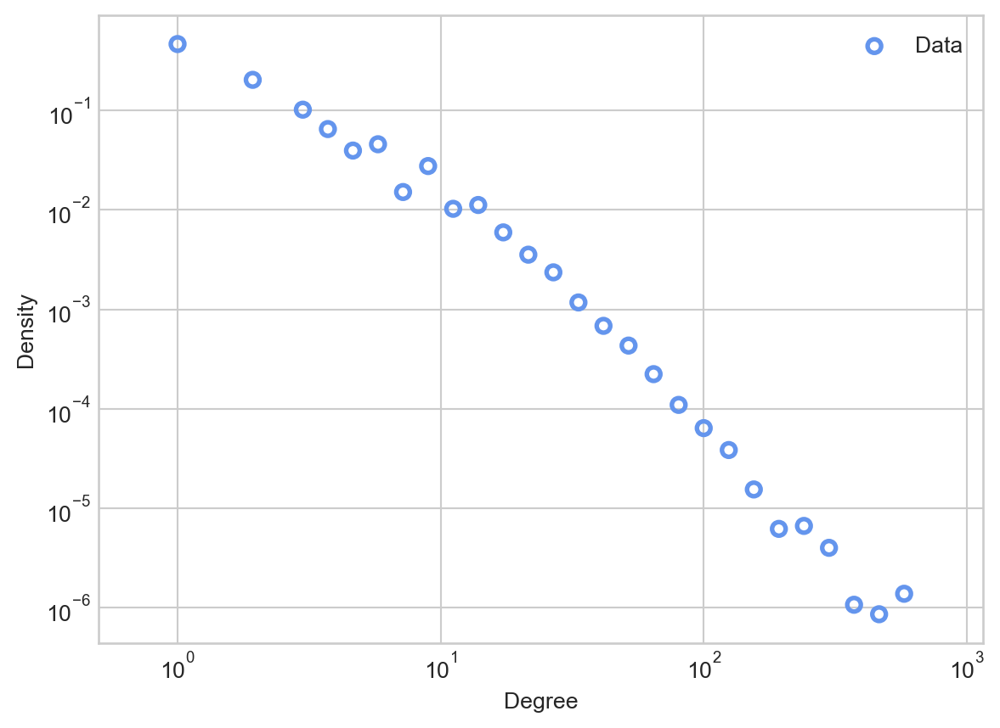
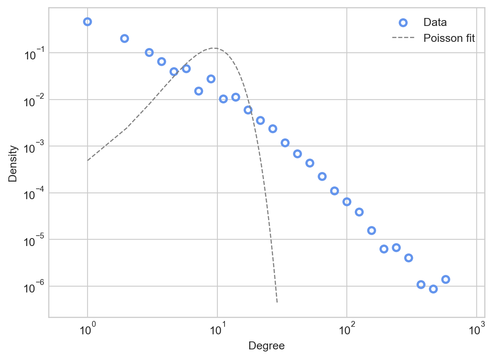
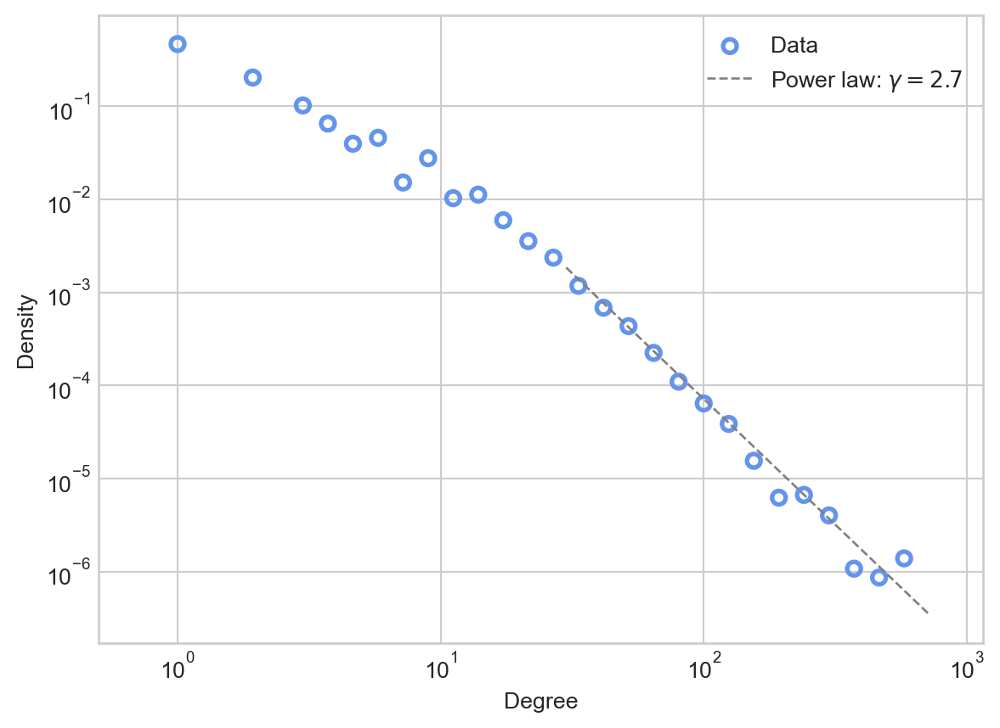
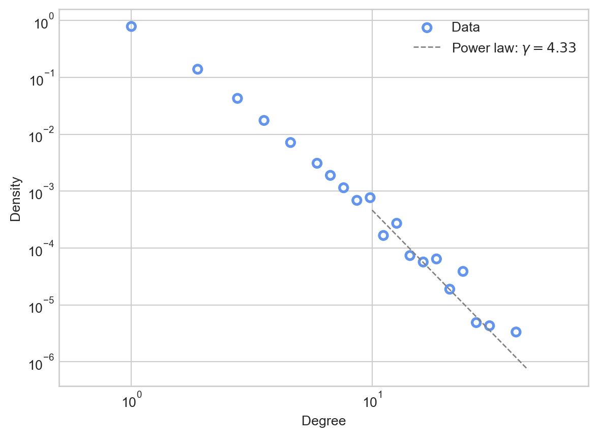

from matplotlib import pyplot as plt
import networkx as nx
plt.style.use('seaborn-v0_8-whitegrid')
import numpy as np
from scipy.special import factorial
import pandas as pd
import random8 Power Law Degree Distributions
Open the live notebook in Google Colab here.
Introduction
Last time, we studied several properties of real-world networks and compared them to randomized models of those networks in which the degrees were held constant. That is, we were looking at aspects of the structure of real-world networks that are not captured by the degree distribution alone. But what about the degree distribution itself? Do real world networks have degree distributions that are especially interesting? What models can account for the degree distributions that we observe?
To observe a degree distribution, let’s take a look at a data set collected from the streaming platform Twitch by Rozemberczki, Allen, and Sarkar (2021). Nodes are users on Twitch. An edge exists between them if they are mutual friends on the platform. The authors collected data sets for users speaking several different languages; we’ll use the network of English-speaking users. Let’s now download the data (as a Pandas data frame) and convert it into a graph using Networkx.
url = "https://raw.githubusercontent.com/benedekrozemberczki/MUSAE/master/input/edges/ENGB_edges.csv"
edges = pd.read_csv(url)
G = nx.from_pandas_edgelist(edges, "from", "to", create_using=nx.Graph)
num_nodes = G.number_of_nodes()
num_edges = G.number_of_edges()
print(f"This graph has {num_nodes} nodes and {num_edges} edges. The mean degree is {2*num_edges/num_nodes:.1f}.")This graph has 7126 nodes and 35324 edges. The mean degree is 9.9.Let’s now define some helper functions to extract and visualize the degree distribution of a graph. Our first function extracts the degree distribution for easy computation, while the second creates a variable-width histogram in which each bin has the same width when plotted on a logarithmic horizontal axis.
This is called logarithmic binning.
def degree_sequence(G):
degrees = nx.degree(G)
degree_sequence = np.array([deg[1] for deg in degrees])
return degree_sequence
def log_binned_histogram(degree_sequence, interval = 5, num_bins = 20):
hist, bins = np.histogram(degree_sequence, bins = min(int(len(degree_sequence)/interval), num_bins))
bins = np.logspace(np.log10(bins[0]),np.log10(bins[-1]),len(bins))
hist, bins = np.histogram(degree_sequence, bins = bins)
binwidths = bins[1:] - bins[:-1]
hist = hist / binwidths
p = hist/hist.sum()
return bins[:-1], p
def plot_degree_distribution(G, **kwargs):
deg_seq = degree_sequence(G)
x, p = log_binned_histogram(deg_seq, **kwargs)
plt.scatter(x, p, facecolors='none', edgecolors = 'cornflowerblue', linewidth = 2, label = "Data")
plt.gca().set(xlabel = "Degree", xlim = (0.5, x.max()*2))
plt.gca().set(ylabel = "Density")
plt.gca().loglog()
plt.legend()
return plt.gca()Let’s use this function to inspect the degree distrubtion of the data:
ax = plot_degree_distribution(G, interval = 10, num_bins = 30)
There are a few things to notice about this degree distribution. First, most nodes have relatively small degrees, fewer tham the mean of 9.9. However, there are a small number of nodes that have degrees which are much larger: almost two orders of magnitude larger! You can think of these nodes as “super stars” or “hubs” of the network; they may correspond to especially popular or influential accounts.
Recall that, from our discussion of the Erdős–Rényi model \(G(n,p)\), the degree distribution of a \(G(n,p)\) model with mean degree \(\bar{d}\) is approximately Poisson with mean \(\bar{d}\). Let’s compare this Poisson distribution to the data.
deg_seq = degree_sequence(G)
mean_degree = deg_seq.mean()
d_ = np.arange(1, 30, 1)
poisson = np.exp(-mean_degree)*(mean_degree**d_)/factorial(d_)
ax = plot_degree_distribution(G, interval = 10, num_bins = 30)
ax.plot(d_, poisson, linewidth = 1, label = "Poisson fit", color = "grey", linestyle = "--")
ax.legend()
Comparing the Poisson fit predicted by the Erdős–Rényi model to the actual data, we see that the the Poisson places much higher probability mass on degrees that are close to the mean of 9.9. The Poisson would predict that almost no nodes would have degree higher than \(10^2\), while in the data there are several.
We often say that the Poisson has a “light right tail” – the probability mass allocated by the Poisson dramatically drops off as we move to the right of the mean. In contrast, the data itself appears to have a “heavy tail”: there is substantial probability mass even far to the right from the mean.
Power Laws As Models of Heavy-Tailed Distributions
There are many probability distributions that have heavy tails. By far the most important (and controversial) in the history of network science is the power law degree distribution.
An important intuitive insight about power law distributions is that they are linear on log-log axes. To see this, we can take the logarithm of both sides in Equation 8.1:
\[ \begin{aligned} \log p_d = \log C - \gamma \log d\;. \end{aligned} \]
So, \(\log p_d\) is a linear function of \(\log d\) with slope \(-\gamma\).
Let’s try plotting such a distribution against the data. Since the power law distribution is defined for all \(d > d_*\), we’ll need to choose a cutoff \(d_*\) and an exponent \(\gamma\). For now, we’ll do this by eye. If we inspect the plot of the data above, it looks like linear behavior takes over somewhere around \(d_* = 10^\frac{3}{2} \approx 30\).
deg_seq = degree_sequence(G)
cutoff = 30
d_ = np.arange(cutoff, deg_seq.max(), 1)
gamma = 2.7
power_law = 18*d_**(-gamma)
ax = plot_degree_distribution(G, interval = 10, num_bins = 30)
ax.plot(d_, power_law, linewidth = 1, label = fr"Power law: $\gamma = {gamma}$" , color = "grey", linestyle = "--")
ax.legend()
The power law appears to be a much better fit than the Poisson to the tail of the distribution, making apparently reasonable predictions about the numbers of nodes with very high degrees.
Where do the parameters for the power law come from? Here we performed a fit “by eye”, but we discuss some systematic approaches in Section 8.5
The claim that a given network “follows a power law” is a bit murky: like other models, power laws are idealizations that no real data set matches exactly. The idea of a power law is also fundamentally asymptotic in nature: the power law that we fit to the data also predicts that we should see nodes of degree \(10^3\), \(10^4\), or \(10^5\) if we were to allow the network to keep growing. Since the network can’t keep growing (it’s data, we have a finite amount of it), we have to view the power law’s predictions about very high-degree nodes as extrapolations toward an idealized, infinite-size data set to which we obviously do not have access.
Statistical Properties of Power Laws
Power law distributions are much more variable than, say, Poisson distributions. Indeed, when \(\gamma \leq 3\), the variance of a power law distribution is infinite. To show this, we calculate the second moment of the distribution:
\[ \begin{aligned} \mathbb{E}[D^2] &= \sum_{d = 1}^\infty p_d d^2 \\ &= \sum_{d = 1}^{d_*} p_d d^2 + \sum_{d = d_* + 1}^\infty d^2 C d^{-\gamma} \\ &= K + C \sum_{d = d_*}^\infty d^{2-\gamma}\;, \end{aligned} \]
where \(K\) is a (finite) constant. Now we draw upon a fact from calculus: the sequence \(\sum_{x = 1}^\infty x^{-p}\) converges if and only if \(p > 1\). This means that the sum \(\sum_{d = d_*}^\infty d^{2-\gamma}\) converges if and only if \(2 - \gamma < -1\), which requires \(\gamma > 3\). If \(\gamma \leq 3\), the second moment (and therefore the variance) is undefined. Heuristically, this means that the distribution can generate samples which are are arbitrarily far from the mean, much as the data above includes samples which are orders of magnitude higher than the mean.
Purported Universality of Power Laws
Barabási and Albert (1999) made the first published that power-law degree distributions are very common in real-world networks. This initial paper has since been cited over 46,000 times (as of August 2024). Many subsequent studies have fit power-law tails to degree distributions in empirical networks across social, technological, and biological domains. The idea that power laws are common in real-world networks is sometimes called the “scale-free hypothesis.” Part of the appeal of this hypothesis comes from statistical physics and complexity science, where power law distributions are common signatures of self-organizing systems.
The Preferential Attachment Model: A Generative Model for Power Law Degrees
Why would power-law degree distributions be common in empirical networks? A common way to answer questions like this is to propose a generative model. A generative model is a random network model that is intended to produce some kind of realistic structure. If the mechanism proposed by the generative model is plausible as a real, common mechanism, then we might expect that the large-scale structure generated by that model would be commonly observed.
Generative models contrast with null models like the \(G(n,p)\) model, which are usually used to contrast with real networks. Generative models are models of what the data is like; null models are models of what the data is not like.
Barabási and Albert (1999) are responsible for popularizing the claim that many empirical networks are scale-free. Alongside this claim, they offered a generative model called preferential attachment. The preferential attachment model offers a simple mechanism of network growth which leads to power-law degree distributions. Their model is closely related to the regrettably much less famous models of Yule (1925), Simon (1955), and Price (1976).
Here’s how the Yule-Simon-Price-Barabási-Albert model works. First, we start off with some initial graph \(G_0\). Then, in each timestep \(t=1,2,\ldots\), we:
The model of Barabási and Albert (1999) did not include a uniform selection mechanism, which corresponds to the case \(\alpha = 1\).
- Flip a coin with probability of heads equal to \(\alpha\). If this coin lands heads, then:
- Choose a node \(u\) from \(G_{t-1}\) with probability proportional to its degree.
- Otherwise, if the coin lands tails, choose a node \(u\) from \(G_{t-1}\) uniformly at random.
- Add a node \(v\) to \(G_{t-1}\).
- Add edge \((u,v)\) to \(G_{t-1}\).
We repeat this process as many times as desired. Intuitively, the preferential attachment model expresses the idea that “the rich get richer”: nodes that already have many connections are more likely to receive new connections.
Here’s a quick implementation.
Note: this implementation of preferential attachment is useful for illustrating the mathematics and operations with Networkx. It is, however, not efficient.
# initial condition
G = nx.Graph()
G.add_edge(0, 1)
alpha = 3/5 # proportion of degree-based selection steps
# main loop
for _ in range(10000):
degrees = nx.degree(G)
# determine u using one of two mechanisms
if np.random.rand() < alpha:
deg_seq = np.array([deg[1] for deg in degrees])
degree_weights = deg_seq / deg_seq.sum()
u = np.random.choice(np.arange(len(degrees)), p = degree_weights)
else:
u = np.random.choice(np.arange(len(degrees)))
# integer index of new node v
v = len(degrees)
# add new edge to graph
G.add_edge(u, v)Let’s go ahead and plot the result. We’ll add a visualization of the exponent \(\gamma\) as well. How do we know the right value of \(\gamma\)? It turns out that there is a theoretical estimate based on \(\alpha\) which we’ll derive in the next section.
deg_seq = degree_sequence(G)
cutoff = 10
d_ = np.arange(cutoff, deg_seq.max(), 1)
gamma = (2 + alpha) / alpha
power_law = 10*d_**(-gamma)
ax = plot_degree_distribution(G, interval = 2, num_bins = 30)
ax.plot(d_, power_law, linewidth = 1, label = fr"Power law: $\gamma = {gamma:.2f}$" , color = "grey", linestyle = "--")
ax.legend()
This fit is somewhat noisy, reflecting the fact that we simulated a relatively small number of preferential attachment steps.
Analyzing Preferential Attachment
Let’s now see if we can understand mathematically why the preferential attachment model leads to networks with power-law degree distributions. There are many ways to demonstrate this fact, including both “casual” and highly rigorous techniques. Here, we’ll use a “casual” argument from Mitzenmacher (2004).
Let \(p_d^{(t)}\) be the proportion of nodes of degree \(d \geq 2\) after algorithmic timestep \(t\). Suppose that at this timestep there are \(n\) nodes and \(m\) edges. Then, the total number of nodes of degree \(d\) is \(n_d^{(t)} = np_d^{(t)}\). Suppose that we do one step of the preferential attachment model. Let’s ask: what will be the new expected value of \(n_d^{(t+1)}\)?
Well, in the previous timestep there were \(n_d^{(t)}\) nodes of degree \(d\). How could this quantity change? There are two processes that could make \(n_d^{(t+1)}\) different from \(n_d^{(t)}\). If we selected a node \(u\) with degree \(d-1\) in the model update, then this node will become a node of degree \(d\) (since it will have one new edge attached to it), and will newly count towards the total \(n_d^{(t+1)}\). On the other hand, if we select a node \(u\) of degree \(d\), then this node will become a node of degree \(d+1\), and therefore no longer count for \(n_d^{(t+1)}\).
So, we can write down our estimate for the expected value of \(n_d^{(t+1)}\).
\[ \begin{aligned} \mathbb{E}\left[n_d^{(t+1)}\right] - n_d^{(t)} = \mathbb{P}[d_u = d-1] - \mathbb{P}[d_u = d]\;. \end{aligned} \]
Let’s compute the probabilities appearing on the righthand side. With probability \(\alpha\), we select a node from \(G_t\) proportional to its degree. This means that, if a specific node \(u\) has degree \(d-1\), the probability of picking \(u\) is
\[ \begin{aligned} \mathbb{P}[u \text{ is picked}] = \frac{d-1}{\sum_{w \in G} d_w} = \frac{d-1}{2m^{(t)}}\;. \end{aligned} \]
Of all the nodew we could pick, \(p_{d-1}^{(t)}n\) of them have degree \(d-1\). So, the probability of picking a node with degree \(d-1\) is \(n p_{d-1}^{(t)}\frac{d-1}{2m}\). On the other hand, if we flipped a tails (with probability \(1-\alpha\)), then we pick a node uniformly at random; each one is equally probable and \(p_{d-1}^{(t)}\) of them have degree \(d-1\). So, in this case the probability is simply \(p_{d-1}^{(t)}\). Combining using the law of total probability, we have
\[ \begin{aligned} \mathbb{P}[d_u = d-1] &= \alpha n p_{d-1}^{(t)}\frac{d-1}{2m^{(t)}} + (1-\alpha)p_{d-1}^{(t)} \\ &= \left[\alpha n \frac{d-1}{2m} + (1-\alpha)\right]p_{d-1}^{(t)}\;. \end{aligned} \]
A similar calculation shows that
\[ \begin{aligned} \mathbb{P}[d_u = d] &= \alpha n p_{d}^{(t)}\frac{d}{2m^{(t)}} + (1-\alpha)p_{d}^{(t)} \\ &= \left[\alpha n \frac{d}{2m} + (1-\alpha)\right]p_{d}^{(t)}\;, \end{aligned} \]
so our expectation is
\[ \begin{aligned} \mathbb{E}\left[n_d^{(t+1)}\right] - n_d^{(t)} = \left[\alpha n \frac{d-1}{2m} + (1-\alpha)\right]p_{d-1}^{(t)} - \left[\alpha n \frac{d}{2m} + (1-\alpha)\right]p_{d}^{(t)}\;. \end{aligned} \]
Up until now, everything has been exact: no approximations involved. Now we’re going to start making approximations and assumptions. These can all be justified by rigorous probabilistic arguments, but we won’t do this here.
- We’ll assume that \(n_d^{(t+1)}\) is equal to its expectation.
- In each timestep, we add one new node and one new edge. This means that, after enough timesteps, the number of nodes \(n\) and number of edges \(m\) should be approximately equal. We’ll therefore assume that \(t\) is sufficiently large that \(\frac{n}{m} \approx 1\).
- Stationarity: we’ll assume that, for sufficiently large \(t\), \(p_d^{(t)}\) is a constant: \(p_d^{(t)} = p_d^{(t+1)} \triangleq p_d\).
To track these assumptions, we’ll use the symbol \(\doteq\) to mean “equal under these assumptions.”
With these assumptions, we can simplify. First, we’ll replace \(\mathbb{E}\left[n_d^{(t+1)}\right]\) with \(n_d^{(t+1)}\), which we’ll write as \((n+1)p_d^{(t+1)}\)
\[ \begin{aligned} (n+1)p_d^{(t+1)} - np_d^{(t)} \doteq \left[\alpha n \frac{d-1}{2m} + (1-\alpha)\right]p_{d-1}^{(t)} - \left[\alpha n \frac{d}{2m} + (1-\alpha)\right]p_{d}^{(t)}\;. \end{aligned} \]
Next, we’ll assume \(\frac{n}{m} \approx 1\):
\[ \begin{aligned} (n+1)p_d^{(t+1)} - np_d^{(t)} \doteq \left[\alpha \frac{d-1}{2} + (1-\alpha)\right]p_{d-1}^{(t)} - \left[\alpha \frac{d}{2} + (1-\alpha)\right]p_{d}^{(t)}\;. \end{aligned} \]
Finally, we’ll assume stationarity:
\[ \begin{aligned} (n+1)p_d - np_d \doteq \left[\alpha \frac{d-1}{2} + (1-\alpha)\right]p_{d-1} - \left[\alpha \frac{d}{2} + (1-\alpha)\right]p_{d}\;. \end{aligned} \]
After a long setup, this looks much more manageable! Our next step is to solve for \(p_d\), from which we find
\[ \begin{aligned} p_d &\doteq \frac{\alpha \frac{d-1}{2} + (1-\alpha)}{1 + \alpha \frac{d}{2} + (1-\alpha)} p_{d-1} \\ &= \frac{2(1-\alpha) + (d-1)\alpha}{2(1-\alpha) + 2 + d\alpha }p_{d-1} \\ &= \left(1 - \frac{2 + \alpha }{2(1-\alpha) + 2 + d\alpha }\right)p_{d-1}\;. \end{aligned} \] When \(d\) grows large, this expression is approximately \[ \begin{aligned} p_d \simeq \left(1 - \frac{1}{d}\frac{2+\alpha}{\alpha}\right) p_{d-1}\;. \end{aligned} \]
Now for a trick “out of thin air.” As \(d\) grows large,
\[ \begin{aligned} 1 - \frac{1}{d}\frac{2+\alpha}{\alpha} \rightarrow \left(\frac{d-1}{d} \right)^{\frac{2 + \alpha}{\alpha}} \end{aligned} \]
Applying this last approximation, we have shown that, for sufficiently large \(d\),
\[ \begin{aligned} p_d \simeq \left(\frac{d-1}{d} \right)^{\frac{2 + \alpha}{\alpha}} p_{d-1}\;. \end{aligned} \]
This recurrence relation, if it were exact, would imply that \(p_d = C d^{-\frac{2+\alpha}{\alpha}}\), as shown by the following exercise:
This concludes our argument. Although this argument contains many approximations, it is also possible to reach the same conclusion using fully rigorous probabilistic arguments (Bollobás et al. 2001).
Estimating Power Laws From Data
After the publication of Barabási and Albert (1999), there was a proliferation of papers purporting to find power-law degree distributions in empirical networks. For a time, the standard method for estimating the exponent \(\gamma\) was to use the key visual signature of power laws – power laws are linear on log-log axes. This suggests performing linear regression in log-log space; the slope of the regression line is the estimate of \(\gamma\). This approach, however, is badly flawed: errors can be large, and uncertainty quantification is not reliably available. Clauset, Shalizi, and Newman (2009) discuss this problem in greater detail, and propose an alternative scheme based on maximum likelihood estimation and goodness-of-fit tests. Although the exact maximum-likelihood estimate of \(\gamma\) is the output of a maximization problem and is not available in closed form, the authors supply a relatively accurate approximation:
\[ \begin{aligned} \hat{\gamma} = 1 + n\left(\sum_{i=1}^n \log \frac{d_i}{d_*}\right)^{-1}\;. \end{aligned} \]
As they show, this estimate and related methods are much more reliable estimators of \(\gamma\) than the linear regression method.
An important cautionary note: the estimate \(\hat{\gamma}\) can be formed regardless of whether or not the power law is a good descriptor of the data. Supplementary methods such as goodness-of-fit tests are necessary to determine whether a power law is appropriate at all. Clauset, Shalizi, and Newman (2009) give some guidance on such methods as well.
Preferential Attachment in Growing Graphs
What if we are able to observe more than the degree distribution of a network? What if we could also observe the growth of the network, and actually know which edges were added at which times? Under such circumstances, it is possible to estimate more directly the extent to which a graph might grow via the preferential attachment mechanism, possibly alongside additional mechanisms. Overgoor, Benson, and Ugander (2019) supply details on how to estimate the parameters of a general class of models, including preferential attachment, from observed network growth.
Are Power Laws Good Descriptors of Real-World Networks?
Are power laws really that common in empirical data? Broido and Clauset (2019) controversially claimed that scale free networks are rare. In a bit more detail, the authors compare power-law distributions to several competing distributions as models of real-world network degree sequences. The authors find that that the competing models—especially lognormal distributions, which also have heavy tails—are often better fits to observed data than power laws. This paper stirred considerable controversy, which is briefly documented by Holme (2019).
Barabási, Albert-László, and Réka Albert. 1999. “Emergence of Scaling in Random Networks.” Science 286 (5439): 509–12. https://doi.org/10.1126/science.286.5439.509.
Bollobás, Bela, Oliver Riordan, Joel Spencer, and Gábor Tusnády. 2001. “The Degree Sequence of a Scale-Free Random Graph Process.” Random Structures & Algorithms 18 (3): 279–90. https://doi.org/10.1002/rsa.1009.
Broido, Anna D., and Aaron Clauset. 2019. “Scale-Free Networks Are Rare.” Nature Communications 10 (1): 1017. https://doi.org/10.1038/s41467-019-08746-5.
Clauset, Aaron, Cosma Rohilla Shalizi, and M. E. J. Newman. 2009. “Power-Law Distributions in Empirical Data.” SIAM Review 51 (4): 661–703. https://doi.org/10.1137/070710111.
Holme, Petter. 2019. “Rare and Everywhere: Perspectives on Scale-Free Networks.” Nature Communications 10 (1): 1016. https://doi.org/10.1038/s41467-019-09038-8.
Mitzenmacher, Michael. 2004. “A Brief History of Generative Models for Power Law and Lognormal Distributions.” Internet Mathematics 1 (2): 226–51. https://doi.org/10.1080/15427951.2004.10129088.
Overgoor, Jan, Austin Benson, and Johan Ugander. 2019. “Choosing to Grow a Graph: Modeling Network Formation as Discrete Choice.” In The World Wide Web Conference, 1409–20. San Francisco CA USA: ACM. https://doi.org/10.1145/3308558.3313662.
Price, Derek de Solla. 1976. “A General Theory of Bibliometric and Other Cumulative Advantage Processes.” Journal of the American Society for Information Science 27 (5): 292–306.
Rozemberczki, Benedek, Carl Allen, and Rik Sarkar. 2021. “Multi-Scale Attributed Node Embedding.” Journal of Complex Networks 9 (2).
Simon, Herbert A. 1955. “On a Class of Skew Distribution Functions.” Biometrika 42 (3-4): 425–40. https://doi.org/10.1093/biomet/42.3-4.425.
Yule. 1925. “A Mathematical Theory of Evolution, Based on the Conclusions of Dr. J. C. Willis, F. R. S.” Philosophical Transactions of the Royal Society of London. Series B, Containing Papers of a Biological Character 213 (402-410): 21–87. https://doi.org/10.1098/rstb.1925.0002.
© Heather Zinn Brooks and Phil Chodrow, 2025